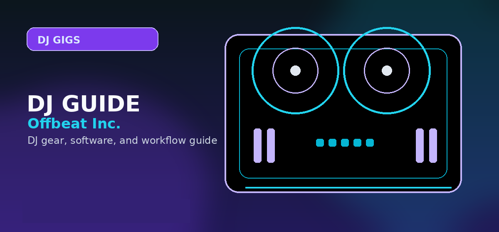

How to Become a DJ in 2026: The Ultimate Career Guide to Equipment, Gigs, and Growth
Comprehensive guide to how to become a DJ career guide 2026 equipment practice gigs career path with practical recommendations and current buying notes — updated 2026.

Disclosure: This page uses affiliate links. We may earn a commission at no extra cost to you. Full disclosure →
Breaking into the DJ scene in 2026 requires more than just a good ear for music; it demands a strategic blend of technical proficiency, brand curation, and an understanding of the hybrid digital-analog landscape. The barrier to entry has never been lower, thanks to affordable high-performance controllers and AI-integrated software, but the competition for visibility is at an all-time high. To transition from a bedroom enthusiast to a paid professional, you must master the "Producer-DJ" hybrid model—where your ability to mix tracks is complemented by your ability to create and distribute your own original edits. This guide provides a streamlined roadmap for navigating the equipment, practice, and networking phases of your career, ensuring you build a sustainable foundation in the modern nightlife and streaming economy.
Essential Equipment for the 2026 DJ
For beginners, the Pioneer DDJ-FLX4 remains the gold standard entry point (~$300), offering seamless integration with Rekordbox and Serato. As you progress, investing in high-quality monitoring is non-negotiable; the Sennheiser HD 25 (~$150) is the industry staple for its durability and isolation in loud booths. If you plan to move into hybrid sets involving live sampling or external synths, a dedicated audio interface is essential. While studio interfaces like the Focusrite Scarlett 2i2 (~$180) are perfect for production, DJ-focused interfaces offer the rugged build and dedicated booth outputs necessary for live environments. Prioritize gear that supports "stem separation" technology, allowing you to isolate vocals and drums in real-time—a critical skill for modern open-format DJing.
Master Your Craft: Practice and Technical Skills
Technical skill is your baseline. Start with beatmatching and phrasing—the art of aligning the energy and structure of two tracks. Once comfortable, move into the realm of production to set yourself apart. Utilizing a Digital Audio Workstation (DAW) allows you to create custom edits and remixes. Ableton Live (~$449) is the premier choice for live performance and looping, while FL Studio (ranging from $99 to $499) is favored by beatmakers for its intuitive step sequencer. Spend 70% of your practice time recording your sets and critiquing them. Focus on "reading the room"—the ability to pivot your genre and energy based on the crowd's reaction, which is the primary difference between a playlist-player and a professional DJ.
Landing Your First Gigs and Building a Network
Your first gigs rarely come from sending cold emails to promoters; they come from community presence. Start by offering "warm-up" slots at local lounges or bars where the pressure is lower and the focus is on atmospheric curation. Build a digital portfolio on TikTok and Instagram, posting 60-second "high-energy" clips of your transitions. In 2026, a polished Electronic Press Kit (EPK) is mandatory. Your EPK should include a high-res press photo, a short bio, and a link to a curated SoundCloud or Mixcloud set. Network by supporting other local DJs; the industry is a small circle, and most mid-tier club bookings happen through referrals from DJs who trust your professionalism and timing.
The Professional Path: Distribution and Branding
To scale from local gigs to international bookings, you must transition into a producer. Creating original tracks gives you a unique "sonic signature" that promoters value. Once you have a finished track, use a distribution service to get your music on Spotify, Apple Music, and Beatport. DistroKid (~$23/year) is highly recommended for its speed and unlimited uploads, while Amuse provides a strong alternative for those looking for a more curated approach to distribution. Your brand is your currency; ensure your visual aesthetic matches your sound. Consistency across your social handles and a clear niche (e.g., Melodic Techno or Afro-House) makes you more "bookable" because promoters know exactly what value you bring to their event's energy.
Equipment & Software Recommendation Matrix
| Tier | Hardware Recommendation | Software Choice | Estimated Cost | Pros | Cons |
|---|---|---|---|---|---|
| Beginner | Pioneer DDJ-FLX4 | Rekordbox (Free) | $300 - $450 | Low cost, easy learning curve | Limited physical controls |
| Intermediate | Pioneer DDJ-1000 / Traktor S4 | Serato DJ Pro | $1,200 - $1,800 | Pro-grade feel, better effects | Higher price point |
| Professional | CDJ-3000s + DJM-900NXS2 | Ableton Live (for hybrid) | $5,000+ | Industry standard, maximum reliability | Extremely expensive |
Quick Verdict
If you are just starting today: Buy a Pioneer DDJ-FLX4, master Rekordbox, and start producing basic remixes in FL Studio. Focus on building a social media presence through short-form video clips and use DistroKid to distribute your first original edit. This combination offers the fastest path from zero to your first paid booking.
The journey from the bedroom to the main stage is a marathon of consistency. By combining technical mastery with a smart distribution strategy and proactive networking, you can carve out a profitable career in the 2026 music scene. Check out our curated list of affiliate links for the best deals on the gear mentioned above to start your journey today.
Your roadmap: Start with a two-channel controller (DDJ-400), learn beatmatching manually before enabling sync, build a 100-track library across three genres, and play your first set within 90 days. Month 4-6: book a residency or open slot at a local venue. The skill compounds fast once you start performing live. Shop Pioneer DJ DDJ-FLX4 on Amazon →
Shop on Amazon
Start your DJ career with the right gear — controllers for every budget on Amazon.
Pro Tips Before You Decide
- Use free trials fully — spend the entire trial period on the specific workflow you plan to use long-term, not just exploring features
- Check recent reviews — software and gear receive regular updates; look for reviews or Reddit posts from the last 3-6 months
- Budget for accessories — cables, stands, carrying cases and replacement pads/needles add 10-20% on top of the main purchase price
- Join the community early — getting active in subreddits and Discord servers before purchasing gives you direct access to current owner feedback
- Plan your setup holistically — whichever product you choose, make sure it integrates cleanly with the rest of your gear and software ecosystem
Frequently Asked Questions
How long does it take to learn DJing?
Basic mixing skills take 1–3 months of regular practice. Getting good enough to DJ at events typically takes 6–12 months. Becoming truly great takes years of playing in front of audiences.
Do I need expensive equipment to become a DJ?
No. A $200–$300 entry-level controller, free software (Rekordbox, Serato Lite), and a laptop is all you need to start. Skills matter far more than gear at the beginning.
How do DJs get their first gig?
Start by playing at house parties and small events. Build a mix portfolio on SoundCloud or Mixcloud. Network at local venues, offer to play for free initially, and work your way up from there.
Do DJs need to know music theory?
Basic rhythm understanding is important. Full music theory knowledge isn't required but helps with harmonic mixing and understanding key relationships between tracks. Apps like Mixed In Key automate key analysis.
What genre should a beginner DJ start with?
Start with the genre you love most. House, hip-hop, and pop are popular starting points due to consistent BPMs and widely available music. Match your genre to the venues you want to play.